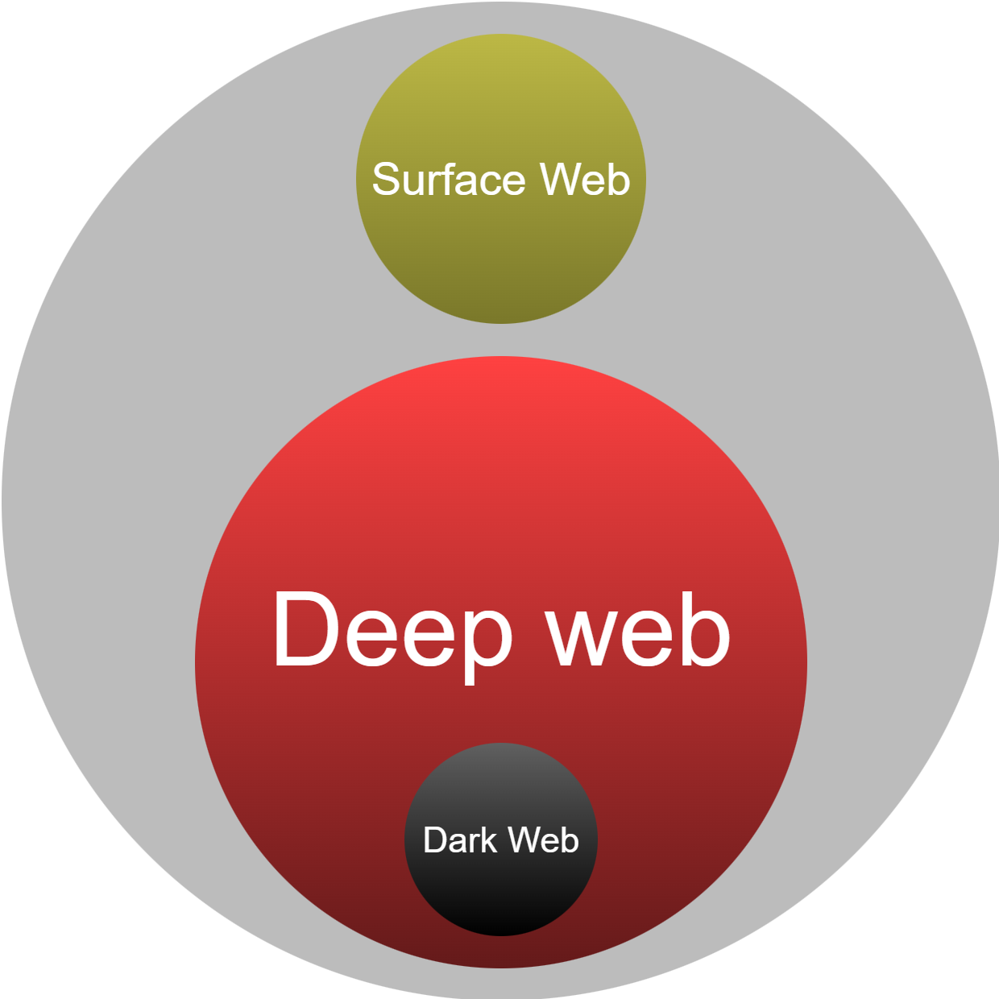

Dark Web
Concepts
-
Surface Web: The visible and indexed part of the Internet, accessible through conventional search engines (Google, Bing, etc.).
-
Deep Web: The portion of the Internet not indexed by standard search engines. Its content is usually behind forms, paywalls, or authentication (login), or is dynamically generated and not exposed to crawlers. Accessing the deep web does not require special software; typically, legitimate credentials or knowing the exact URL are enough. It is mostly legitimate and necessary for the daily operations of organizations and services.
-
Dark Web: An intentionally hidden subset of the deep web, accessible through specific networks/software (e.g., Tor, I2P, Freenet). Its services do not use public DNS nor are they indexed by traditional search engines. The dark web provides enhanced anonymity for users and operators, making it attractive for both legitimate uses (privacy, freedom of expression, journalism) and illicit activities.

Access networks
Tor
Tor (The Onion Router) is a network that hides your IP address and the location of the sites you connect to. It is used for privacy, to bypass censorship, and to access hidden services with .onion addresses. The typical way to access Tor is through Tor Browser, which is pre-configured to minimize the browser’s digital footprint.
Tor creates an encrypted 3-hop circuit (nodes) to reach the Internet. In .onion services (also called hidden services), there is no exit node to the Internet: the client and service communicate entirely within Tor through intermediate nodes, providing anonymity to both ends. Current .onion addresses (v3) are 56-character strings derived from a public key; if the key changes, the address changes as well.
When Tor is blocked, it can be started using bridges (unlisted entry nodes) and pluggable transports (e.g., obfs4, snowflake) that obfuscate traffic. Applications can use Tor via SOCKS5 (e.g., 127.0.0.1:9050) or utilities such as torsocks.
Tor + VPN
Tor alone is usually sufficient. A VPN → Tor ("Tor over VPN") can hide from your ISP (internet service provider) that you are using Tor, but it does not improve anonymity within the network; evaluate the VPN’s policies. Chaining Tor → VPN ("VPN over Tor") is more complex and uncommon.
I2P
I2P (The Invisible Internet Project) is a network that provides an abstraction layer for communication between computers, allowing the creation of network tools and applications with strong anonymity. It is a network focused on internal services (called eepsites) and anonymous messaging. Unlike Tor, its priority is not browsing the public web, but communicating within I2P with low exposure.
I2P routes traffic through unidirectional tunnels (one for sending and one for receiving) and encapsulates messages using garlic routing (multiple messages in one). The network maintains a distributed database (netDb) to discover destinations; some addresses use the base32 format .b32.i2p. Latency is usually higher than Tor for regular web browsing, but it is suitable for persistent internal services.
Freenet
Freenet is a P2P network focused on publishing and storing content in a censorship-resistant manner. Instead of "browsing" servers, data blocks (chunks) are retrieved from nodes distributed across the network.
Content is addressed using keys: CHK (immutable content) and SSK/USK (allow for updatable publications). Routing is probabilistic with a distributed cache; it provides persistence and censorship resistance at the cost of higher latency.
Recommendations
Do:
-
Use live systems or dedicated VMs: A live operating system (live OS) runs directly from a USB or DVD without installing anything on the host computer, leaving no trace on the personal machine. Using Tails (a live OS with Tor enabled by default) or dedicated VMs (e.g., Whonix) separates your research environment from your personal device, improving security and privacy.
-
Segmentation in Qubes/VMs: In more advanced setups, isolate tasks (browsing, downloading, file analysis) in separate disposable VMs.
-
Research accounts and profiles: Maintain separate identities with no link to real profiles, and rotate them periodically when needed.
-
Anti-exfiltration tools: Disable automatic mounting of external USBs and block WebRTC. These measures prevent accidental data leaks that could reveal your real IP address, device information, or other sensitive information to websites or observers on the network.
-
DNS leaks: Make sure that all DNS queries go through the anonymous network (Tor, VPN, proxy) and not directly through your Internet Service Provider. To achieve this, it is recommended to replace your ISP’s DNS with Google DNS or Cloudflare DNS.
-
Use the highest security level compatible with your task: Disable active functions when not needed (JavaScript, multimedia).
-
Verify downloads: Check signatures/PGP or hashes, and open files offline in disposable machines.
-
Double-check the exact domain address: Phishing clones exist, so confirm you are accessing the correct domain or
.onionaddress.
Don't:
-
Use personal accounts: Log in with personal accounts or reuse real aliases.
-
Modify the browser: Resize windows, install browser extensions, or use plugins (Flash, Java, etc.).
-
Unsafe document handling: Download documents and open them online; they may leak your IP or telemetry data.
-
Use high-exposure protocols: Use torrents or protocols that expose your real IP address.
-
Unauthorized interactions: Interact (purchase, post, offer services) unless you have explicit authorization and a clear legal framework.
Current trends
After shutdowns and exit scams, many communities frequently migrate between .onion domains and, in parallel, to invitation-only forums on the clear web or to public channels on encrypted messaging platforms (e.g., Telegram). This fragments the conversation, shortens lifecycle spans, and requires continuous monitoring of new gathering points.
The market for stolen credentials and infostealer logs (cookies, tokens, sessions) continues to grow due to their usefulness in bypassing MFA, hijacking sessions, and facilitating fraud. The supply of combos (email + password) and sector- or country-segmented packages is increasing.
Alongside Bitcoin, there is increasing use of privacy-focused cryptocurrencies (e.g., Monero) and mixers. Operators rotate wallets and publish instructions for “secure” payments; at the same time, open-source transaction tracing is becoming widespread for financial intelligence.
Longer v3 .onion domains, frequent service rotation, highly convincing phishing clones, and more aggressive anti-crawling protections (rate limits, proof-of-work, graylists). Passive observation and responsible archiving are increasingly favored over intrusive collection methods.